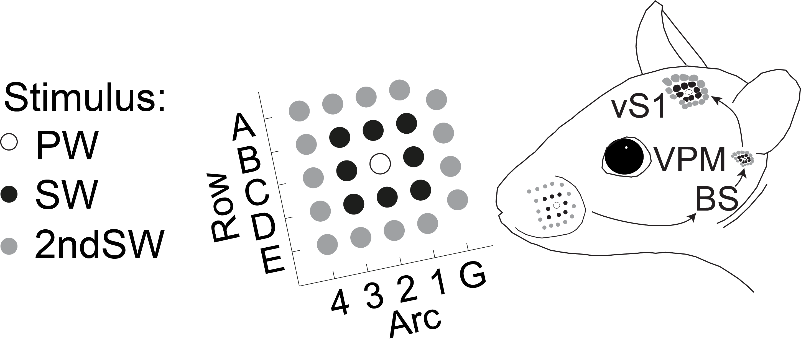
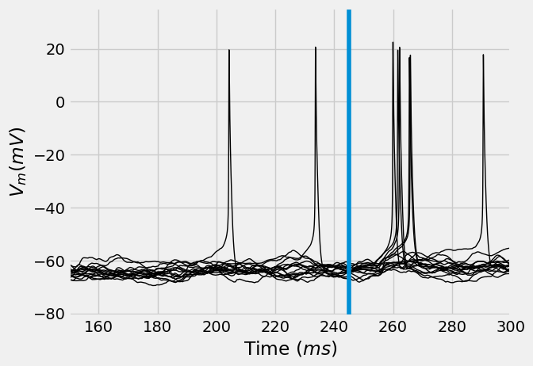
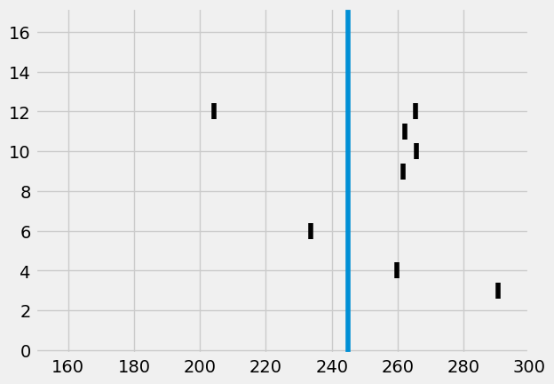
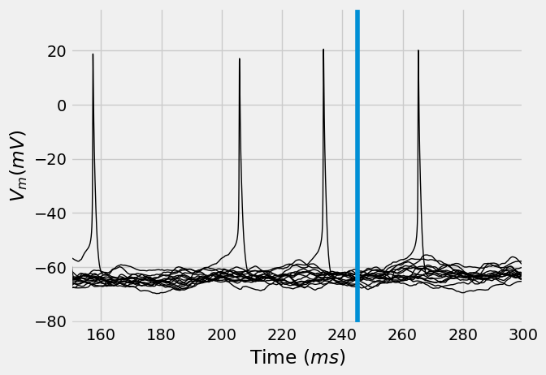
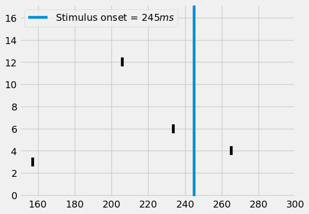
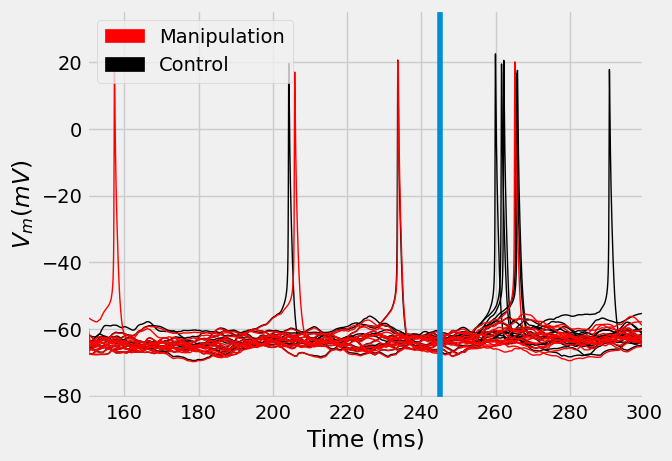
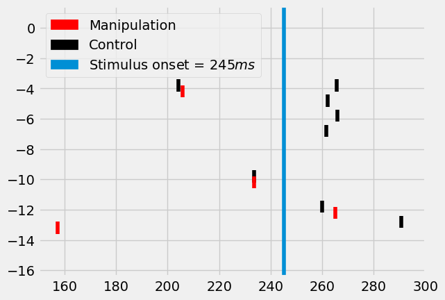

Manipulations of multiscale simulations¶
ISF provides two strategies for identifying common mechanisms and quantifying the impact of individual mechanisms across multi-scale models. The first strategy is to manipulate specific properties of multi-scale models and investigate their effect on the neuronal responses, which will be covered in this tutorial. The second strategy is to reduce the multi-scale models to a minimal set of parameters that are sufficient to account for an in vivo observation, which will be covered in the next tutorial.
The purpose of manipulating multi-scale simulations is to isolate the relevance of individual mechanisms for the observed in vivo response. ISF can re-simulate existing multi-scale simulations with the exact same biophysical parameters, synapse locations and synapse activation times, while making any of the following targeted manipulations:
Scaling synaptic weights by distance, receptor type, presynaptic origin, or individually
Changing synaptic activation patterns by the same categories
Removing connectivity to presynaptic cells or populations
Changing biophysical parameters
Any combination of the above
ISF thereby enables the investigation of the exact effect of each component mechanism across a broad diversity of multi-scale simulations. The effect of these manipulations, and to which degree these manipulations are robust under trial-to-trial, cell-to-cell and network variability provides mechanistic insight into the neuron and network properties and interactions underlying in vivo responses. The purpose of these manipulations is to generate concrete predictions about underlying mechanisms and thereby inform experiment design to verify these predictions empirically.
Broad receptive fields of L5PTs and input from L6CC¶
Egger et al. (2020) Showed how L5PT neurons are unable to respond to \(2^{nd}\) surround whisker stimuli in the absence of input from Layer 6 cortico-cortical (L6CC) input.
We will repeat the manipulations performed in Egger et al. (2020) on a single neuron for a single trial, using the same parameter files we generated in the previous tutorial.
Stimuli that are second surround to the \(C2\) column are the rows \(A\) and \(E\), and arcs \(4\) and \(\gamma\) (here: \(G\))

Simulating \(2nd\) surround whisker responses¶
Let’s consider a morphology that has been placed in the center of the \(C2\) column. We have examples of such morphology in the example data folder. Let’s copy it over to a dedicated database:
[ ]:
from pathlib import Path
tutorial_output_dir = f"{Path.home()}/isf_tutorial_output" # <-- Change this to your desired output directory
[2]:
import Interface as I
from getting_started import getting_started_dir
network_db = I.DataBase(tutorial_output_dir)['network_modeling']
db = I.DataBase(tutorial_output_dir).create_sub_db('multiscale_manipulations')
if not 'biophysical_constraints' in db.keys():
cell_parameter_file = I.os.path.join(
getting_started_dir,
'example_data',
'biophysical_constraints',
'86_C2_center.param')
I.shutil.copy(cell_parameter_file, db.create_managed_folder('biophysical_constraints'))
cell_parameter_file = db['biophysical_constraints'].join('86_C2_center.param')
[INFO] ISF: Current version: heads/docs+0.g1456ee0eb.dirty
[INFO] ISF: Current pid: 195809
Warning: no DISPLAY environment variable.
--No graphics will be displayed.
[INFO] l5pt: Loaded mechanisms in NEURON namespace.
[ATTENTION] ISF: The source folder has uncommited changes!
[INFO] ISF: Loaded modules with __version__ attribute are:
IPython: 8.12.2, Interface: heads/docs+0.g1456ee0eb.dirty, PIL: 9.4.0, _brotli: 1.0.9, _csv: 1.0, _ctypes: 1.1.0, _curses: b'2.2', _decimal: 1.70, argparse: 1.1, backcall: 0.2.0, blosc: 1.11.1, bluepyopt: 1.9.126, brotli: 1.0.9, certifi: 2024.08.30, cffi: 1.17.0, charset_normalizer: 3.4.0, click: 7.1.2, cloudpickle: 3.1.0, colorama: 0.4.6, comm: 0.2.2, csv: 1.0, ctypes: 1.1.0, cycler: 0.12.1, cytoolz: 0.12.3, dash: 2.18.2, dask: 2.30.0, dateutil: 2.9.0, deap: 1.4, debugpy: 1.8.5, decimal: 1.70, decorator: 5.1.1, defusedxml: 0.7.1, distributed: 2.30.0, distutils: 3.8.15, entrypoints: 0.4, executing: 2.1.0, fasteners: 0.17.3, flask: 1.1.4, fsspec: 2024.10.0, future: 1.0.0, greenlet: 3.1.1, idna: 3.10, ipaddress: 1.0, ipykernel: 6.29.5, ipywidgets: 8.1.5, isf_pandas_msgpack: 0.4.0, itsdangerous: 1.1.0, jedi: 0.19.1, jinja2: 2.11.3, joblib: 1.4.2, json: 2.0.9, jupyter_client: 7.3.4, jupyter_core: 5.7.2, kiwisolver: 1.4.5, logging: 0.5.1.2, markupsafe: 2.0.1, matplotlib: 3.5.1, msgpack: 1.0.8, neuron: 7.8.2+, numcodecs: 0.12.1, numexpr: 2.8.6, numpy: 1.19.2, packaging: 25.0, pandas: 1.1.3, parso: 0.8.4, past: 1.0.0, pexpect: 4.9.0, pickleshare: 0.7.5, platform: 1.0.8, platformdirs: 4.3.6, plotly: 5.24.1, prompt_toolkit: 3.0.48, psutil: 6.0.0, ptyprocess: 0.7.0, pure_eval: 0.2.3, pydevd: 2.9.5, pygments: 2.18.0, pyparsing: 3.1.4, pytz: 2024.2, re: 2.2.1, requests: 2.32.3, scipy: 1.5.2, seaborn: 0.12.2, six: 1.16.0, sklearn: 0.23.2, socketserver: 0.4, socks: 1.7.1, sortedcontainers: 2.4.0, stack_data: 0.6.2, statsmodels: 0.13.2, tables: 3.8.0, tblib: 3.0.0, tlz: 0.12.3, toolz: 1.0.0, tqdm: 4.67.1, traitlets: 5.14.3, urllib3: 2.2.3, wcwidth: 0.2.13, werkzeug: 1.0.1, yaml: 6.0.2, zarr: 2.15.0, zlib: 1.0, zmq: 26.2.0, zstandard: 0.19.0
[64]:
second_surround_whisker = "C4" # Some whisker that is second surround to C2
In Tutorial 2.1, we have already generated synapse locations for this \(C2\)-embedded neuron, which gave us .syn and .con files. In Tutorial 2.2, we additionally generate activation patterns for these synapses that reflect a variety of stimuli, including those that come from \(2nd\) surround whiskers. Let us take a look at those again:
[ ]:
network_file = network_db['network_param'].join('{}_stim.param'.format(second_surround_whisker))
assert I.os.path.exists(network_file), "Please run tutorials 2.1 and 2.2 first"
[65]:
delayeds = []
# Delete previous results, if they exist
if 'simrun' in db.keys():
del db['simrun']
# Create new folder for results
db.create_managed_folder('simrun')
network_file = network_db['network_param'].join('{}_stim.param'.format(second_surround_whisker))
dir_prefix = db['simrun'].join('stim_{}'.format(second_surround_whisker))
nSweeps = 4 # number of consecutive simulations per process
nprocs = 4 # number of processes simulating that task in parallel
tStop = 300 # stop the simulation at 300ms
d = I.simrun_run_new_simulations(
cell_parameter_file, # defined in the above cell
network_file,
dirPrefix = dir_prefix,
nSweeps = nSweeps,
nprocs = nprocs,
tStop = tStop,
silent = False
)
delayeds.append(d)
[WARNING] isf_data_base: ISF has uncommitted changes - reproducing results may not be possible.
[66]:
client = I.get_client()
client
[66]:
Client
|
Cluster
|
[ ]:
from dask.distributed import wait
futures = client.compute(delayeds)
wait(futures)
After the results are completed, they are saved here:
[69]:
db['simrun'].join('stim_{}'.format(second_surround_whisker))
[69]:
'/gpfs/soma_fs/home/meulemeester/isf_tutorial_output/multiscale_manipulations/db/simrun/stim_C4'
Let’s consolidate them again in a single database with efficient dataframes:
[ ]:
I.db_init_simrun_general.init(
db.create_sub_db("stim_{}".format(second_surround_whisker)),
db['simrun'],
client=client
)
Analyzing the results¶
[71]:
vt = db[f'stim_{second_surround_whisker}']['voltage_traces']
vt = client.compute(vt).result()
sa = db[f"stim_{second_surround_whisker}"]["synapse_activation"]
st = db[f"stim_{second_surround_whisker}"]['spike_times']
[82]:
stim_onset = 245 # Check tutorial 2.2 or 3.1 for why this is 245 ms
converge_t = 150 # rough estimate of how long neuron models take to
[126]:
%matplotlib inline
I.plt.style.use("fivethirtyeight")
ax = vt.T.plot(legend=False, lw=1, c='k', xlabel="Time ($ms$)", ylabel="$V_m (mV)$")
ax.axvline(stim_onset, label=f"Stimulus onset = {stim_onset}")
ax.set_xlim((converge_t, 300))
I.plt.show()

[127]:
from visualize.rasterplot import rasterplot2
rasterplot2(st, c='k', y_plot_length=.8)
I.plt.axvline(stim_onset, label=f"Stimulus onset = {stim_onset}")
I.plt.xlim((converge_t, 300))
I.plt.show()

Manipulations¶
ISF allows you to rerun simulations with adaptations. Adaptations can be made for:
The exact synapse activations or presynaptic cell activations
The most convenient way is to initialize the results in a database (as done above) and using rerun_db. You can then use the following keyword arguments for manipulations:
neuron_param_modify_functionsnetwork_param_modify_functionssynapse_activation_modify_functions
These arguments take a list of functions that accept, adapt and return Neuron parameters, Network parameters, or synapse activations respectively. Finally, the keyword argument additional_network_params accepts a list of extra network
parameters, allowing you to define new presynaptic cell populations in addition to the existing ones.
Note: other methods that allow manipulations is to simply generate new embeddings and/or parameterfiles and run new simulations using run_new_simulations, or the function sim_trial_to_cell_object for single trials.
For this tutorial, we will silence individual synapse activations from \(L6CC\) to recreate the manipulations performed in Egger et al. (2020) Let’s start by investigating the synapse activation dataframe
[76]:
sa = db[f"stim_{second_surround_whisker}"]["synapse_activation"]
# All synapses activations of cell type L6cc for all simulation runs (see index)
sa[sa['synapse_type'].str.contains("L6cc")].compute()
[76]:
| synapse_type | synapse_ID | soma_distance | section_ID | section_pt_ID | dendrite_label | 0 | 1 | 2 | 3 | 4 | 5 | 6 | |
|---|---|---|---|---|---|---|---|---|---|---|---|---|---|
| sim_trial_index | |||||||||||||
| stim_C4/results/20250822-1542_seed2287520848_pid178653/000000 | L6cc_A1 | 0 | 185.771836 | 90 | 117 | Dendrite | 63.940260 | NaN | NaN | NaN | NaN | NaN | NaN |
| stim_C4/results/20250822-1542_seed2287520848_pid178653/000000 | L6cc_A1 | 1 | 242.702257 | 155 | 235 | Dendrite | 273.149086 | NaN | NaN | NaN | NaN | NaN | NaN |
| stim_C4/results/20250822-1542_seed2287520848_pid178653/000000 | L6cc_A1 | 2 | 240.927344 | 10 | 186 | ApicalDendrite | 273.149086 | NaN | NaN | NaN | NaN | NaN | NaN |
| stim_C4/results/20250822-1542_seed2287520848_pid178653/000000 | L6cc_A1 | 6 | 530.380364 | 38 | 333 | ApicalDendrite | 50.843721 | NaN | NaN | NaN | NaN | NaN | NaN |
| stim_C4/results/20250822-1542_seed2287520848_pid178653/000000 | L6cc_A1 | 10 | 238.345563 | 155 | 227 | Dendrite | 180.606116 | NaN | NaN | NaN | NaN | NaN | NaN |
| ... | ... | ... | ... | ... | ... | ... | ... | ... | ... | ... | ... | ... | ... |
| stim_C4/results/20250822-1542_seed3932428736_pid178570/000003 | L6ccinv_E2 | 9 | 236.361331 | 104 | 33 | Dendrite | 218.238873 | NaN | NaN | NaN | NaN | NaN | NaN |
| stim_C4/results/20250822-1542_seed3932428736_pid178570/000003 | L6ccinv_E3 | 31 | 69.612081 | 4 | 50 | Dendrite | 147.964417 | NaN | NaN | NaN | NaN | NaN | NaN |
| stim_C4/results/20250822-1542_seed3932428736_pid178570/000003 | L6ccinv_Gamma | 11 | 132.944682 | 165 | 44 | Dendrite | 221.128521 | NaN | NaN | NaN | NaN | NaN | NaN |
| stim_C4/results/20250822-1542_seed3932428736_pid178570/000003 | L6ccinv_Gamma | 37 | 304.241017 | 83 | 81 | ApicalDendrite | 255.332251 | NaN | NaN | NaN | NaN | NaN | NaN |
| stim_C4/results/20250822-1542_seed3932428736_pid178570/000003 | L6ccinv_Gamma | 38 | 236.039422 | 104 | 32 | Dendrite | 34.310460 | NaN | NaN | NaN | NaN | NaN | NaN |
6354 rows × 13 columns
Manipulating these synapse activations is now as simple as defining a function that accepts this dataframe, adapts it, and returns the changed dataframe. We will silence all \(L6CC\) populations that reside in the stimulated column. That way, our \(C2\)-embedded \(L5PT\) neuron will not receive input from this particular \(2nd\) surround column:
[ ]:
def silence_l6cc_subpopulation(sa, cell_type="L6cc", column=second_surround_whisker):
"""Remove all synapse activations from a SA dataframe if they are from L6cc neurons in
the barrel of the simulated whisker"""
return sa[~sa['synapse_type'].str.contains(f"{cell_type}_{column}")]
And then we can re-run the same simulation trials, but including these manipulations:
[79]:
if 'simrun_manipulations' in db.keys():
del db['simrun_manipulations']
# Create new folder for results
db.create_managed_folder('simrun_manipulations')
ds = I.simrun_rerun_db(
db = db[f'stim_{second_surround_whisker}'],
outdir = db['simrun_manipulations'],
synapse_activation_modify_functions = [silence_l6cc_subpopulation] # <-------------- this is the crux of this manipulation
)
[WARNING] isf_data_base: ISF has uncommitted changes - reproducing results may not be possible.
[80]:
from dask.distributed import wait
futures = client.compute(ds)
wait(futures) # block computation util results are in
[80]:
DoneAndNotDoneFutures(done={<Future: finished, type: builtins.NoneType, key: _evoked_activity-a1c8eb78-a98b-4891-8363-a871d78415e2>, <Future: finished, type: builtins.NoneType, key: _evoked_activity-863c6be0-6a2e-47b6-9fff-3df02a59e8b3>, <Future: finished, type: builtins.NoneType, key: _evoked_activity-d062abdf-b628-4399-90f6-56be0592bd60>, <Future: finished, type: builtins.NoneType, key: _evoked_activity-f746b3f9-d299-4b3e-bf0e-bf1aa54d8c61>}, not_done=set())
Let’s inspect them again:
[ ]:
I.db_init_simrun_general.init(
db.create_sub_db(f"stim_{second_surround_whisker}_manipulations"),
db['simrun_manipulations'],
client=client
)
[90]:
vt_manipulations = db[f'stim_{second_surround_whisker}_manipulations']['voltage_traces']
vt_manipulations = client.compute(vt_manipulations).result()
[91]:
st_manipulations = db[f"stim_{second_surround_whisker}_manipulations"]['spike_times']
[92]:
ax = vt_manipulations.T.plot(legend=False, lw=1, c='k', xlabel="Time ($ms$)", ylabel="$V_m (mV)$")
ax.axvline(stim_onset, label=f"Stimulus onset = {stim_onset}")
ax.set_xlim((converge_t, 300))
[92]:
(150.0, 300.0)

[125]:
rasterplot2(st_manipulations, c='k', y_plot_length=.8)
I.plt.axvline(stim_onset, label=f"Stimulus onset = ${stim_onset}ms$")
I.plt.xlim((converge_t, 300))
I.plt.legend()
I.plt.show()

Comparing the results¶
[122]:
import matplotlib.patches as mpatches
ax = vt.T.plot(legend=False, label="Control", lw=1, c='k')
ax = vt_manipulations.T.plot(legend=False, label="Manipulation", ax=ax, lw=1, c='red')
patch_manip = mpatches.Patch(color='red', label='Manipulation')
patch_control = mpatches.Patch(color='k', label='Control')
I.plt.legend(handles=[patch_manip, patch_control])
I.plt.xlabel("Time (ms)")
I.plt.ylabel("$V_m (mV)$")
I.plt.xlim((converge_t, 300))
I.plt.axvline(stim_onset)
I.plt.show()

[121]:
fig = I.plt.figure()
ax = fig.gca()
rasterplot2(st, c='k', y_plot_length=.8, ax=ax, y_offset=.2)
rasterplot2(st_manipulations, c='red', y_plot_length=.8, ax=ax, y_offset=-.2)
I.plt.axvline(stim_onset, label="Simulus onset")
patch_manip = mpatches.Patch(color='red', label='Manipulation')
patch_control = mpatches.Patch(color='k', label='Control')
patch_onset = mpatches.Patch(
color=I.plt.rcParams['axes.prop_cycle'].by_key()['color'][0],
label='Stimulus onset = ${}ms$'.format(stim_onset))
I.plt.xlim((converge_t, 300))
I.plt.legend(handles=[patch_manip, patch_control, patch_onset])
I.plt.show()

Interpreting the result¶
We have now simulated a \(L5PT\) neuron in the \(C2\) column of the barrel cortex. We showed how to use ISF to re-run these existing simulations, while providing targeted manipulations at the single synapse level.
In this case, the manipulation consisted of silencing all synapses that originate from the \(L6CC\) population in the column of the stimulated \(2nd\) surround whisker. This almost completely eradicated the responses of these neurons to whisker stimuli that are \(2nd\) surround to the \(C2\) column.
Of course, the low sample size in this tutorial prevents us from making conclusive statements on the effect of this manipulation. To fully investigate this impact, we would not only need larger sample sizes, but also repeat these manipulations for different embedding locations, neuron models, and network parameters. The purpose of this tutorial is not to provide a full-fledged investigation on the effect of \(L6CC\) input to \(L5PT\) neurons. For that, you can refer to Egger et al. (2020). The purpose of this tutorial is to show how to use ISF API to perform such manipulations.